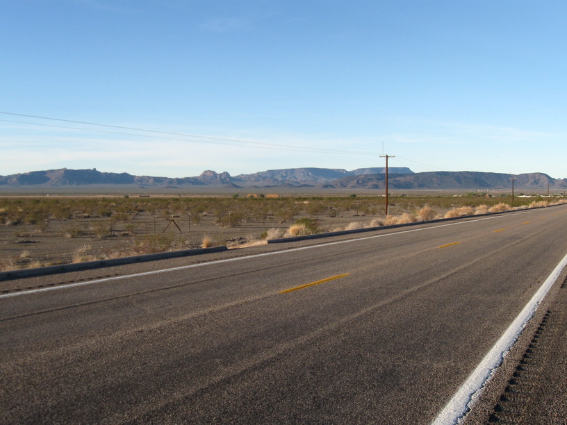
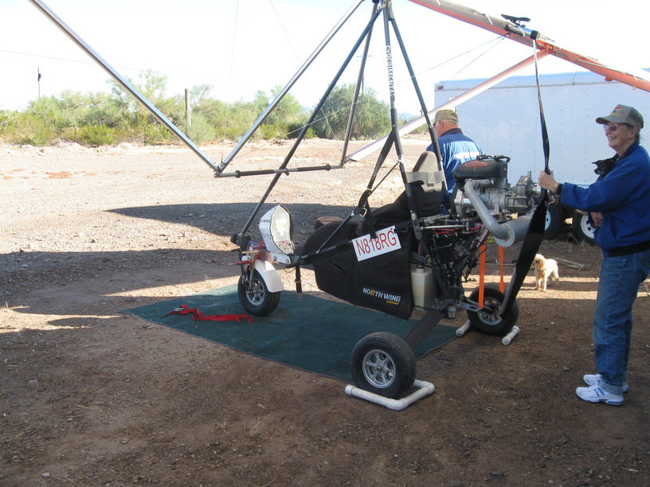
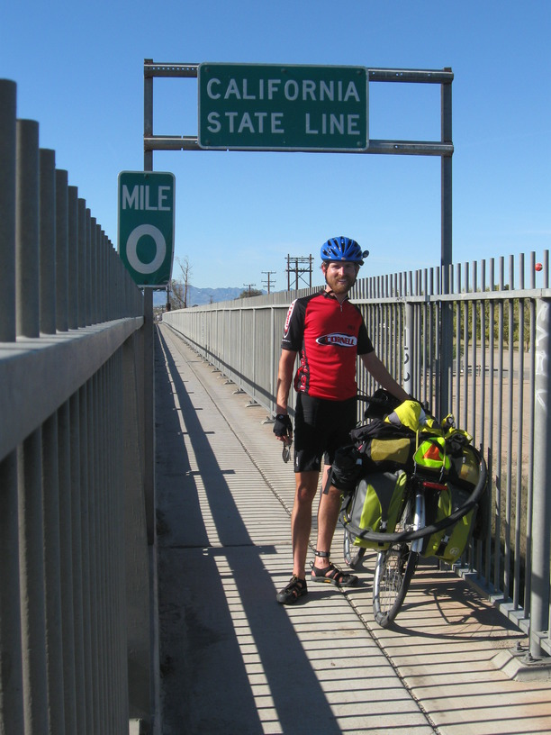

1 Dec 2008, Palo Verde, CA
Very good day today. I traded contact info with the other cyclists before heading out. My rear tire felt low as I started, and I debated changing it or just filling it up. I was impatient, so I filled it & headed out, expecting & dreading that it would be flat in the first half hour. Thankfully, it lasted all day!
I had lunch in Quartzsite, AZ, which is basically one giant, temporary flea market. The town has 157 RV parks, and the street was basically lined with outdoor vendors.
Jumping back before lunch, I saw some folks flying ultralights as I passed by an RV park. I stopped to look & take some photos & ask a bunch of question. There were also some RC planes in the air some distance across the road. Pretty cool. The RV park had a helipad too . . .
Crossed the Colorado River into California after lunch. Last state! I stopped for a cold drink at Starbucks & a guy with an Ohio State hat started asking me about my trip. We chatted for a bit before he took off again.
I'm camping at the Tamarisk RV park in Palo Verde, CA. It's a very laid-back establishment in a very laid-back town. I haven't seen anyone who works here & the office closed at 1pm. I'm told that tent camping is free, though.
As I finished dinner one of the residents, Danny, came & started making a fire in the fire pit. He was really friendly & gave me some insight into the town—very small, laid back, everyone-knows-everyone, etc. He's gone off now, but I'm still enjoying the fire. It's mesmerizing.


